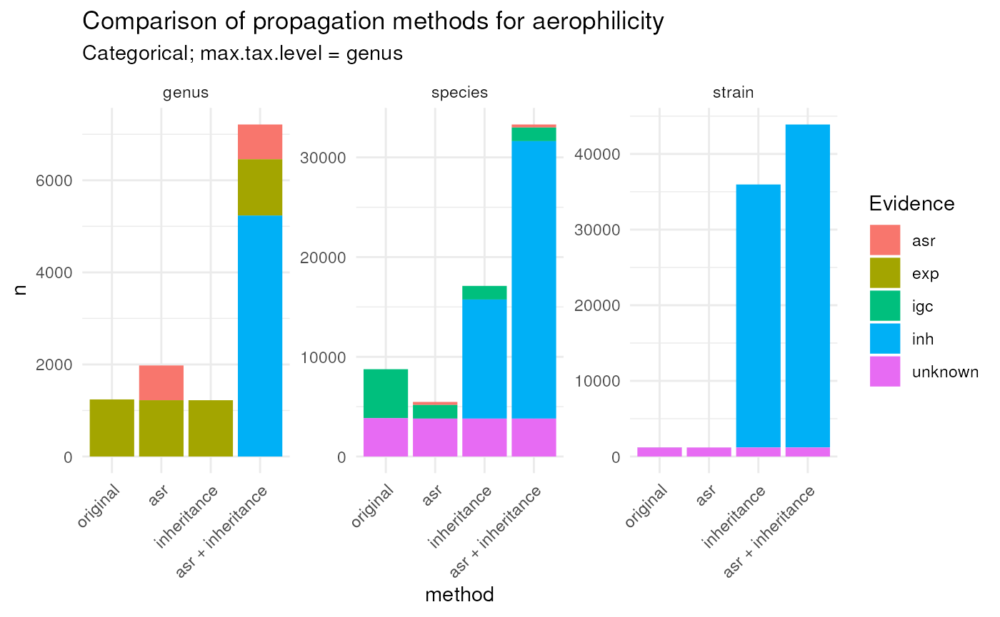
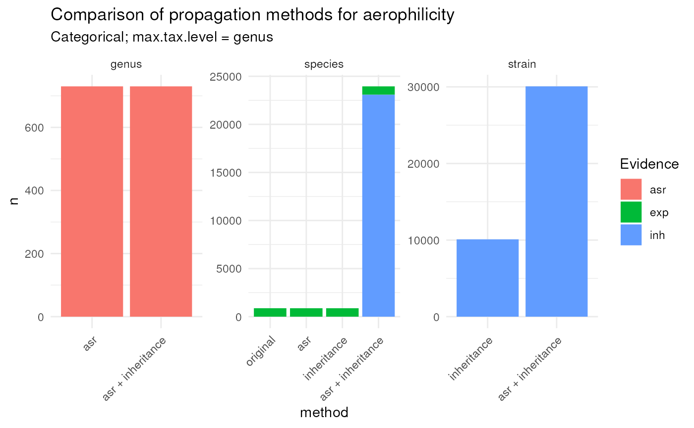

Attribute with categorical values (aerophilicity):
aer <- physiologies('aerophilicity')[[1]]
aer_asr <- propagate(aer, max.tax.level = 'family', direction = 'upstream')
aer_inh <- propagate(aer, max.tax.level = 'family', direction = 'downstream')
aer_prop <- propagate(aer, max.tax.level = 'family', direction = 'both')
aer_data <- list(
original = aer, asr = aer_asr, inheritance = aer_inh,
`asr + inheritance` = aer_prop
)
aer_data <- lapply(aer_data, function(x) {
x$NCBI_ID <- as.character(x$NCBI_ID)
x$Parent_NCBI_ID <- as.character(x$Parent_NCBI_ID)
x
})
aer_data <- aer_data |>
bind_rows(.id = 'method')
aer_data_summary <- aer_data |>
count(method, Evidence, Rank) |>
filter(Rank %in% c('genus', 'species', 'strain')) |>
mutate(
method = factor(
method, c('original', 'asr', 'inheritance', 'asr + inheritance')
)
) Plot numbers
aer_data_summary |>
ggplot(aes(method, n)) +
geom_col(aes(fill = Evidence)) +
labs(
title = 'Comparison of propagation methods for aerophilicity',
subtitle = 'Categorical; max.tax.level = genus'
) +
facet_wrap(~Rank, scales = 'free') +
theme_minimal() +
theme(
axis.text.x = element_text(angle = 45, hjust = 1)
) 
In the case of the areophilicity dataset, the number of genera increases from about 1200 to 2000, when using asr. The number of species increases from about 10,000 to almost 15,000. There is no much change in the number of strains. The number strains goes from 35,000 to about 40,000.
The low number of species obtained through ASR is due to the low levels of strains present in the original data (right panel). However, it seems that these few species make a considerably difference when
Attribute with continuous values (optimal ph):
ph <- physiologies('optimal ph')[[1]]
ph_asr <- propagate(ph, max.tax.level = 'genus', direction = 'upstream')
ph_inh <- propagate(ph, max.tax.level = 'genus', direction = 'downstream')
ph_prop <- propagate(ph, max.tax.level = 'genus', direction = 'both')
ph_data <- list(
original = ph, asr = ph_asr, inheritance = ph_inh,
`asr + inheritance` = ph_prop
)
ph_data <- lapply(ph_data, function(x) {
x$NCBI_ID <- as.character(x$NCBI_ID)
x$Parent_NCBI_ID <- as.character(x$Parent_NCBI_ID)
x
})
ph_data <- ph_data |>
bind_rows(.id = 'method')
ph_data_summary <- ph_data |>
count(method, Evidence, Rank) |>
filter(Rank %in% c('genus', 'species', 'strain')) |>
mutate(
method = factor(
method, c('original', 'asr', 'inheritance', 'asr + inheritance')
)
) Plot numbers:
ph_data_summary |>
ggplot(aes(method, n)) +
geom_col(aes(fill = Evidence)) +
labs(
title = 'Comparison of propagation methods for aerophilicity',
subtitle = 'Categorical; max.tax.level = genus'
) +
facet_wrap(~ Rank, scales = 'free') +
theme_minimal() +
theme(
axis.text.x = element_text(angle = 45, hjust = 1)
) 
This dataset didn’t have any genera. So, all genera come from ASR. The increase in the number of taxa at the species and strain levels seems considerable.
sessionInfo()
#> R Under development (unstable) (2023-02-01 r83747)
#> Platform: x86_64-pc-linux-gnu (64-bit)
#> Running under: Ubuntu 22.04.1 LTS
#>
#> Matrix products: default
#> BLAS: /usr/lib/x86_64-linux-gnu/openblas-pthread/libblas.so.3
#> LAPACK: /usr/lib/x86_64-linux-gnu/openblas-pthread/libopenblasp-r0.3.20.so; LAPACK version 3.10.0
#>
#> locale:
#> [1] LC_CTYPE=en_US.UTF-8 LC_NUMERIC=C
#> [3] LC_TIME=en_US.UTF-8 LC_COLLATE=en_US.UTF-8
#> [5] LC_MONETARY=en_US.UTF-8 LC_MESSAGES=en_US.UTF-8
#> [7] LC_PAPER=en_US.UTF-8 LC_NAME=C
#> [9] LC_ADDRESS=C LC_TELEPHONE=C
#> [11] LC_MEASUREMENT=en_US.UTF-8 LC_IDENTIFICATION=C
#>
#> time zone: Etc/UTC
#> tzcode source: system (glibc)
#>
#> attached base packages:
#> [1] stats graphics grDevices utils datasets methods base
#>
#> other attached packages:
#> [1] ggplot2_3.4.0 dplyr_1.1.0 bugphyzz_0.0.1.3 taxPPro_0.1.0
#>
#> loaded via a namespace (and not attached):
#> [1] gtable_0.3.1 xfun_0.37 bslib_0.4.2 taxa_0.4.2
#> [5] tzdb_0.3.0 vctrs_0.5.2 tools_4.3.0 generics_0.1.3
#> [9] parallel_4.3.0 curl_5.0.0 tibble_3.1.8 fansi_1.0.4
#> [13] RSQLite_2.2.20 highr_0.10 blob_1.2.3 pkgconfig_2.0.3
#> [17] data.table_1.14.6 dbplyr_2.3.0 desc_1.4.2 assertthat_0.2.1
#> [21] uuid_1.1-0 lifecycle_1.0.3 farver_2.1.1 conditionz_0.1.0
#> [25] compiler_4.3.0 stringr_1.5.0 textshaping_0.3.6 munsell_0.5.0
#> [29] taxizedb_0.3.0 htmltools_0.5.4 sass_0.4.5 yaml_2.3.7
#> [33] pillar_1.8.1 pkgdown_2.0.7 crayon_1.5.2 jquerylib_0.1.4
#> [37] tidyr_1.3.0 ellipsis_0.3.2 cachem_1.0.6 tidyselect_1.2.0
#> [41] digest_0.6.31 stringi_1.7.12 purrr_1.0.1 labeling_0.4.2
#> [45] rprojroot_2.0.3 fastmap_1.1.0 grid_4.3.0 colorspace_2.1-0
#> [49] cli_3.6.0 magrittr_2.0.3 bold_1.2.0 crul_1.3
#> [53] utf8_1.2.3 readr_2.1.3 withr_2.5.0 scales_1.2.1
#> [57] rappdirs_0.3.3 bit64_4.0.5 rmarkdown_2.20 bit_4.0.5
#> [61] hms_1.1.2 ragg_1.2.5 memoise_2.0.1 taxize_1.0
#> [65] evaluate_0.20 knitr_1.42 mgsub_1.7.3 hoardr_0.5.3
#> [69] rlang_1.0.6 Rcpp_1.0.10 glue_1.6.2 DBI_1.1.3
#> [73] httpcode_0.3.0 xml2_1.3.3 vroom_1.6.1 reshape_0.8.9
#> [77] jsonlite_1.8.4 R6_2.5.1 plyr_1.8.8 systemfonts_1.0.4
#> [81] fs_1.6.1